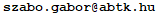

Reading seminar
The aim of the seminar is to bring together researchers and students with a background in physics, mathematics or philosophy of science and to create a platform to discuss some foundational questions of modern physics. For each session, we read a paper on some foundational issues and discuss it. The seminars last 90 minutes and will be held roughly in every second month.
Venue: Institute of Philosophy, Research Center for the Humanities, Budapest, 1097 Tóth Kálmán u. 4, Floor 7, Seminar room (B.7.16)
Upcoming session: June 6, 2024, Thursday, 16.00
Paper: P. Pearle, A. Rizzi: Quantized vector potential and alternative views of the magnetic Aharonov-Bohm phase shift link
Original idea: L. Vaidman: Role of potentials in the Aharonov-Bohm effect link
Short intro by Győző Egri
Community
Events
June 7, 2024
Meaning, Truth, and Physics
Some links
Logic and Philosophy of Science
The Budapest Research Group on the Philosophical Foundations of Science
People
| Boda Dezső | Bozsonyi Károly |
| Cserti József | Dávid Gyula |
| Diósi Lajos | Domokos Péter |
| E. Szabó László | Egri Győző |
| Etesi Gábor | Földes Szabolcs |
| Geszti Tamás | Gömöri Márton |
| Gurin Péter | Gyenis Balázs |
| Hofer-Szabó Gábor | Inotai Balázs Bence |
| Kiss Tamás | Kormos Márton |
| László András | Lencsés Máté |
| Német Nikolett | Németh Róbert |
| Regős Enikő | Réti Eszter |
| Sándor Márk | Solymos Adrián |
| Szalay Szilárd | Szegedi Péter |
| Szívós Mihály | Takács Gábor |
| Van Péter | Vecsernyés Péter |
| Vukics András | Zimborás Zoltán |
To join our mailing list
send an email to !
!
Contact
Egri Győző ()Hofer-Szabó Gábor ()